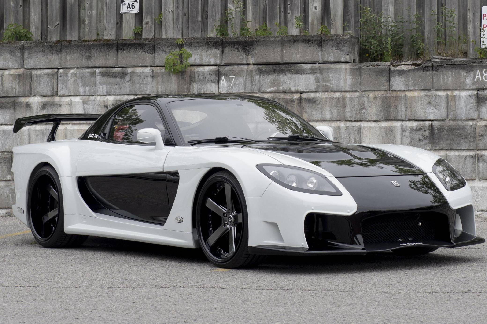

Mazda Rx-7
O Mazda RX-7 é um dos carros esportivos mais icônicos da Mazda, conhecido por seu design distinto e seu motor rotativo. Produzido entre 1978 e 2002, o RX-7 passou por três gerações e é altamente valorizado por sua inovação técnica e desempenho dinâmico. Vamos explorar mais sobre o RX-7:
Motor Rotativo
Tecnologia Wankel: O RX-7 é famoso por utilizar o motor rotativo Wankel, uma inovação técnica que difere dos motores de pistão tradicionais. Em vez de cilindros e pistões, o motor rotativo utiliza um rotor triangular que gira em torno de um eixo excêntrico. Características do Motor: O motor rotativo é conhecido por sua suavidade e alta rotação. É compacto e leve, o que contribui para a distribuição de peso e o desempenho do carro. No entanto, ele também é conhecido por ter um consumo de combustível relativamente alto e pode exigir mais manutenção. Potência: Dependendo da geração e configuração, o motor rotativo do RX-7 pode gerar entre 130 e 280 hp (cavalos de potência). Modelos mais recentes, como o RX-7 FD3S, são especialmente conhecidos por suas impressões de potência impressionantes.

Gerações do Rx-7
Primeira Geração (SA/FB, 1978-1985): Introduzido em 1978, o RX-7 da primeira geração foi um sucesso inicial e ajudou a estabelecer a reputação da Mazda como fabricante de carros esportivos. Caracterizava-se por um design compacto e leve e um motor rotativo de 1.1 litros. Segunda Geração (FC, 1986-1991): Conhecida por seu design mais angular e pela introdução de uma suspensão independente nas quatro rodas, a segunda geração do RX-7 trouxe melhorias significativas em termos de conforto e desempenho. Também viu a introdução de uma versão turboalimentada do motor rotativo. Terceira Geração (FD3S, 1992-2002): A terceira geração é frequentemente considerada a mais icônica do RX-7, especialmente o modelo FD3S. Com um design mais moderno e agressivo, esta versão introduziu um motor rotativo de 1.3 litros com turbocompressor, oferecendo desempenho excepcional. É muito valorizada por entusiastas de carros esportivos.
Desempenho e Dinâmica
Distribuição de Peso: O design compacto e o motor rotativo do RX-7 ajudam a alcançar uma distribuição de peso quase ideal, o que melhora a dinâmica de direção e a agilidade. Manuseio: O RX-7 é conhecido por seu manuseio ágil e resposta precisa, tornando-o um carro popular para dirigibilidade esportiva e corridas de pista.
Cultura e Legado
Popularidade: O RX-7 tem uma base de fãs dedicada e é altamente valorizado no mercado de carros esportivos. Sua presença em videogames e cultura popular ajudou a manter seu status icônico. Participação em Motorsport: O RX-7 competiu em várias categorias de motorsport, incluindo corridas de resistência e drifting. Seu motor rotativo e seu design leve eram bem adaptados para estas disciplinas.
Desafios e Considerações
Manutenção: O motor rotativo, embora inovador, pode ser mais exigente em termos de manutenção e consumo de combustível comparado aos motores de pistão tradicionais. Proprietários devem estar cientes dos requisitos específicos de manutenção e cuidados. Emissões: Os motores rotativos têm uma reputação de serem menos eficientes em termos de emissões de poluentes, o que pode ser um fator para considerações ambientais e regulatórias.
Modelos e Variantes
Versões Turbo: Muitas versões do RX-7, especialmente na terceira geração, ofereceram opções turboalimentadas que melhoraram significativamente o desempenho. Modelos Especiais: Existem versões e edições especiais do RX-7 que foram produzidas para homenagear marcos específicos ou atender a mercados específicos.
O Mazda RX-7 é um carro esportivo que continua a ser admirado por sua inovação e desempenho. O motor rotativo e a dinâmica de direção do RX-7 fazem dele um veículo distinto e memorável, com um legado que continua a inspirar entusiastas de automóveis ao redor do mundo.